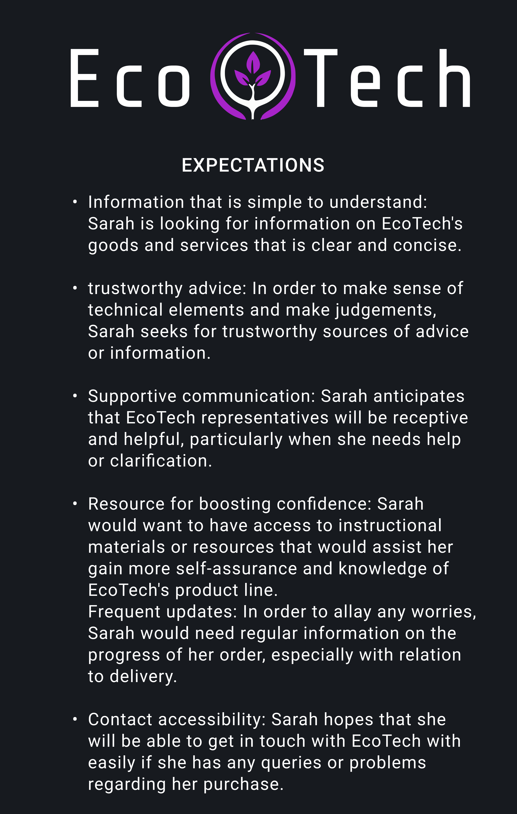
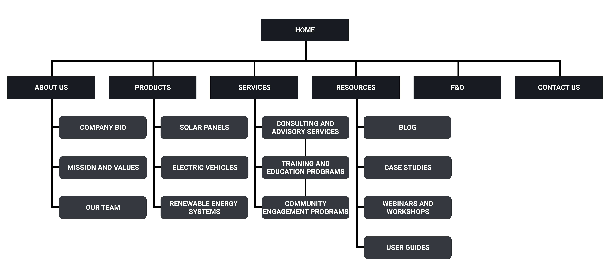

Logo Redesign
With the new logo, I wanted to keep the aesthetic message that came from the original logo whilst
incorporating a more tech theme around that original design. I built the new logo around the plant
being the centerpiece of the logo and encased it in a location pin that is commonly seen on Google
Maps - then I wrapped the logo with the purple borders to make it feel more organic.
.png)
When creating the design, I wanted to find a way to make it feel less blocky and pointed, and wanted
to find ways to make it feel more organic, which is better fitting for EcoTech. I started with the
idea of thinking of purple borders to be like a thumb that is grabbing the plant and plucking it -
which is the reason the location pin design isn't pointed to give that organic feeling.
User Persona
In crafting the user persona for EcoTech, the primary focus was on capturing the essence of the
general consumer interested in eco-friendly products and inclined towards purchasing from companies
like EcoTech. Central to this process was an assessment of the individual's existing knowledge and
its potential impact on their interaction with EcoTech. It became evident that the user's overall
experience would heavily hinge on the availability and accessibility of information regarding
EcoTech's products.

Identifying the core needs and frustrations of the user was crucial, with a significant frustration
stemming from the lack of comprehensive information or understanding about EcoTech's offerings.
Despite this potential hurdle, there existed a strong inclination among users to patronize EcoTech
and make purchases from the company.
Understanding that users were willing to invest time and effort in learning more about EcoTech, it
became imperative to ensure that information was easily accessible and readily available. Any
barriers to accessing information, such as requiring payment or navigating through complex
processes, could deter users from engaging further with EcoTech. Therefore, the primary focus in
developing the user persona was on facilitating easy and convenient access to information,
recognizing that seamless access to unfamiliar territory was essential for fostering user engagement
and satisfaction.
User Journey
The development of the user persona for EcoTech was centered on understanding the needs and
preferences of the general consumer interested in eco-friendly products. In crafting the user
persona, I carefully considered the level of information available to individuals and how it
influenced their experience with EcoTech. It became evident that a lack of accessible information
and understanding of the products could lead to frustration among users. However, despite this
potential barrier, there existed a strong desire among consumers to make purchases from EcoTech.


Recognizing the importance of ease of access to information, I focused on ensuring that relevant
information was readily available and easily accessible to users. This approach aimed to address
users' frustrations and facilitate a seamless browsing and purchasing experience.
As part of the user journey development, I began by outlining a sequence of key points to serve as a
foundation for the user's interaction with EcoTech's website:
- Discovery: Users arrive at EcoTech's website.
- Exploration: Users navigate the website to find specific informatio
- Information sourcing: Users seek relevant information, assessing its accessibility on EcoTech's
site.
- Consideration: Users build confidence and comfort with potential purchases.
- Conversion: Users engage with EcoTech to make a purchase.
- Post-purchase experience: Users experience the follow-up process and assess its impact.

Expanding upon these key points, I developed a detailed user journey diagram that accurately
depicted the anticipated interactions and experiences of users as they engaged with EcoTech's
website. This comprehensive approach ensured that the user journey effectively catered to the needs
and expectations of the identified user persona, fostering a positive and seamless user experience.
Site Mapping and Designs
The initial phase of site mapping and design began with the creation of a rough blueprint outlining
the site's architecture, emphasizing core functionalities and content. Subsequently, an initial
sitemap was developed, followed by the creation of a basic wireframe to conceptualize the layout and
flow of the homepage.

However, upon the creation of the wireframe, it became evident that the chosen color scheme posed
challenges and felt disjointed, hindering further progress. This prompted a reevaluation of the
design aesthetics to ensure cohesion and visual appeal.

After several iterations, the color scheme was revamped to achieve a bolder and more impactful look.
The new palette exuded a sense of professionalism and sophistication, prompting an expansion of the
site's taxonomy to better align with the refined visual direction.
Utilizing the updated taxonomy provided deeper insights into the content structure, facilitating the
creation of a more refined sitemap. This holistic approach significantly enhanced the logical flow
and organization of content on the homepage, resulting in a more cohesive and user-friendly design.


Content Strategy
Phase One: Audit and Analysis
Our trip began with a thorough examination of EcoTech's content landscape. I gained crucial insights
about our emerging content domain after conducting a thorough assessment. By recognizing both
strengths and places for growth, I established the framework for a strategy that was highly
responsive to the demands of our audience.

Phase two: Development and Structure
I began the development phase armed with the audit's observations. I used a disciplined approach to
content development, led by well-defined calendars for short and medium-form material. These
calendars functioned as our compass, delivering a consistent flow of relevant and engaging content
across all of our channels.


Phase 3: Diversification and expansion.
But our adventure wasn't done. Recognizing the power of alternative media, I went into unknown
territory, embracing podcasts, interactive tools, and other novel formats. These additions not only
would widen our horizons but also increase our connection to our community, resulting in a more
informed and loyal following.